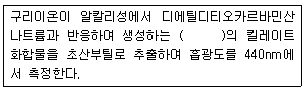
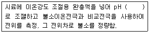
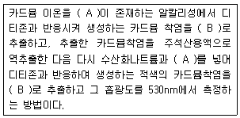
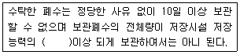

수질환경산업기사 (2010-07-25 기출문제)
1과목: 수질오염개론
1. Streeter-Phelps 모델에 관한 내용으로 옳지 않은 것은?
- 최초의 하천 수질 모델링이다.
- 유속, 수심, 조도계수에 의한 확산계수를 결정한다.
- 점오염원으로부터 오염부하량을 고려한다.
- 유기물의 분해에 따라 용준산소 소비와 재폭기를 고려한다.
(정답률: 74%)

2. 미생물 세포를 C5H7O2N 이라고 하면 세포 3kg당의 이론적인 공기 소모량은? (단, 완전산화 기준이며 분해 최종산물은 CO2, H2O, NH3, 공기중 산소는 23%(W/W)로 가정한다.)
- 약 16.5 kg air
- 약 17.5 kg air
- 약 18.5 kg air
- 약 19.5 kg air
(정답률: 71%)
3. 0.⑤N의 약산인 초산이 8% 해리되어 있다면 이 수용액의 pH는?
- 3.2
- 2.9
- 2.7
- 2.4
(정답률: 60%)
4. [H+]= 5.0×10-3mol/L인 용액의 pH는?
- 2.3
- 2.6
- 2.9
- 3.2
(정답률: 75%)
5. BOD5 가 213mg/L인 하수의 9일 동안 소모된 BOD는? (단, 탈산소 계수는 0.14/day(상용대수 기준))
- 233mg/L
- 238mg/L
- 242mg/L
- 251mg/L
(정답률: 67%)
6. 지하수의 특성에 관한 내용으로 옳지 않은 것은?
- 토양수내 유기물질 분해에 따른 CO2의 발생과 약산성의 빗물로 인한 광물질의 침전으로 경고가 낮다.
- 기온의 영향이 거의 없어 년 중 수온의 변동이 적다.
- 하천수에 비하여 흐름이 완만하여 한번 오염된 후에는 회복되는 데 오랜 시간이 걸리며 자정작용이 느리다.
- 토양의 여과작용으로 미생물이 적으며 탁도가 낮다.
(정답률: 67%)
7. Ca+2 이온의 농도가 500mg/L인 물의 환산경도는? (단, Ca 원자량: 40)
- 1⑤0mg CaCO3/L
- 1150mg CaCO3/L
- 1250mg CaCO3/L
- 1350mg CaCO3/L
(정답률: 78%)
8. 다음과 같이 유기물을 처리한 후 하천으로 방류할 경우, BOD 배출 총량이 가장 많은 경우는? (단, 폐수의 BOD 농도는 1,000mg/L이며, 유량은 10m3/day이다. 희석수의 BOD 농도는 1 mg/L 이다. )
- BOD를 60% 제거한 후 희석하지 않고 하천으로 방류
- BOD를 50% 제거한 후 희석수로 5배 희석하여 하천으로 방류
- BOD를 40% 제거한 후 희석수로 10배 희석하여 하천으로 방류
- BOD를 30% 제거한 후 희석수로 20배 희석하여 하천으로 방류
(정답률: 50%)
9. 성층현상이 있는 호수에서 수심에 따라 수온차이가 가장 크게 나타나는 층은?
- epilimnion
- thermocline
- 침전물층
- hypolimnion
(정답률: 84%)
10. 0.01M NaOH 100mL를 중화하는데 0.1N H2SO4를 몇 mL가 소비 되는가?
- 5
- 10
- 20
- 100
(정답률: 50%)
11. BOD5 가 180mg/L이고 COD가 300mg/L인 경우, 탈산소계수(K1)의 값은 0.12/day 였다. 이때 생물학적으로 분해 불가능한 COD는? (단, 상용대수 기준)
- 50mg/L
- 60mg/L
- 70mg/L
- 80mg/L
(정답률: 85%)
12. BOD5가 200mg/L, 탈산소계수(상용대수)가 0.1/day이라면 최종 BOD(mg/L)는?
- 233.5
- 256.5
- 271.5
- 292.5
(정답률: 72%)
13. CaF2의 포화 용액 중에 Ca+2의 농도는 18℃에서 2×10-4mole/L이다. CaF2의 용해도적은?
- 4.3×10-11
- 3.2×10-11
- 2.6×10-9
- 1.6×10-8
(정답률: 40%)
14. 해수의 특성에 관한 설명으로 옳은 것은?
- 해수 내 아질산성 질소와 질산성 질소는 전체 질소의 약 35%이며 나머지는 암모니아성 질소와 유기질소의 형태이다.
- 해수의 pH는 7.3~7.8 정도이며 탄산염의 완충용액이다.
- 해수의 주요성분 농도비는 일정하다.
- 해수는 약전해질로 평균 35% 정도의 염분농도를 함유한다.
(정답률: 75%)
15. 환경미생물에 관한 설명으로 옳지 않은 것은?
- Bacteria는 형상에 따라 막대형, 구형, 나선형 등으로 구분되며 용해된 유기물을 섭취한다.
- Fungi는 탄소동화작용을 하지 않으며 폐수 내 질소와 용존산소가 부족한 환경에서도 잘 성장한다.
- Algae는 단세포 또는 다세포의 유기영양형 광합성 원생동물이다.
- Protozoa는 편모충류, 섬모충류 등이 있으며 흔히 박테리아 같은 미생물을 잡아먹는다.
(정답률: 70%)
16. 3% NaCl의 M 농도는? (단, NaCl 분자량 = 58.5)
- 0.1M
- 0.5M
- 1.0M
- 1.5M
(정답률: 70%)
17. 0.00⑤M의 NaCl용액의 농도(ppm)는?(단, NaCl 분자량: 58.5)
- 9.3
- 19.3
- 29.3
- 39.3
(정답률: 65%)
18. 글루코스(C6H12O6)를 200mg/L 함유하고 있는 시료용액의 총유기 탄소의 이론치는?
- 120mg/L
- 100mg/L
- 90mg/L
- 80mg/L
(정답률: 50%)
19. 어떤 오염물질의 반응 초기 농도가 200mg/L에서 2시간 후에 40mg/L로 감소되었다. 이 반응이 1차 반응이라고 한다면 3시간 후의 농도(mg/L)는?
- 18.0
- 22.0
- 26.0
- 28.0
(정답률: 67%)
20. 자연수의 수질 및 특성에 관한 설명으로 옳지 않은 것은?
- 자연수의 pH는 CO2와 CO3-2의 비율로서 결정되는데, 공기 중의 탄산가스가 수분에 용해된 탄산의 포화평형상태 pH는 약 6.3 이다.
- 낙차가 큰 물은 교란과 폭기작용으로 인해 pH가 높아진다.
- 조류의 광합성 작용이 활발하면 물의 pH는 높아진다.
- 액체상태의 물은 공유결합과 수소결합의 구조로 H+, OH-로 전리 되어 전하적으로 양성을 가진다.
(정답률: 54%)
2과목: 수질오염방지기술
21. 어느 공장의 BOD 배출량이 500명의 인구당량에 해당하며, 폐수량은 30m3/hr이다. 공장 폐수의 BOD(mg/L) 농도는? (단, 1인당 하루에 배출하는 BOD는 45 g이다. )
- 31.25
- 33.42
- 40.15
- 51.25
(정답률: 알수없음)
22. 회전 생물막 접촉기(RBC)에 관한 설명으로 옳지 않은 것은?
- 미생물에 대한 산소공급 소요전력이 적고 높은 슬러지 일령이 유지된다.
- RBC조 메디아는 전형적으로 약 40% 정도가 물에 잠기도록 한다.
- 타 생물학적 처리공정에 비하여 bench-scale의 처리 연구를 현장 규모 시스템으로 scale-up 시키기 어렵다.
- RBC로의 유입수는 스크린이나 침전과정 없이 메디아에 바로 접촉시켜 처리 효율을 높인다.
(정답률: 55%)
23. 수처리를 위한 막(membrane)이용공정에 대한 설명으로 옳지 않은 것은?
- 투석에 대한 추진력은 막을 기준으로 한 용질의 농도차이이다.
- 전기투석을 위한 전기투석막은 합성 이온교환 수지로 된 가공성 평면 행렬구조이다.
- 역삼투가 이온교환과 유사한 이유는 용질의 반투막 통과 시 기전력을 이용하기 때문이다.
- 투석은 선택적 투과막을 통해 용액 중에 다른 이온, 혹은 분자크기가 다른 용질을 분리시키는 것이다.
(정답률: 43%)
24. 유량 1000m3/day, 유입 BOD 600mg/L인 폐수를 활성슬러지공법으로 처리하고 있다. 폭기시간 12시간, 처리수 BOD농도 40mg/L, 세포 증식계수 0.8, 내생호흡계수 0.08/d, MLSS농도 4000mg/L 라면 고형물의 체류시간(day)은?
- 약 7
- 약 9
- 약 11
- 약 13
(정답률: 24%)
25. 연속 회분식 반응조(SBR)의 운전단계(주입, 반응, 침전, 제거, 휴지)별 개요에 관한 설명으로 옳지 않은 것은?
- 주입: 주입과정에서 반응조의 수위는 25% 용량(휴지기간 끝에 용량)에서 100% 까지 상승 된다.
- 반응: 전형적으로 총 cycle시간의 70% 이상으로 운전시간의 대부분을 차지한다.
- 침전: 연속흐름식 공정에 비하여 일반적으로 더 효율적이다.
- 제거: 침전 후 상징수(처리수)를 반응조로부터 제거하는 것으로 총 cycle 시간의 5~30% 정도이다.
(정답률: 67%)
26. DO농도가 10mg/L인 물 100m3에 Na2SO3를 사용하여 수중 DO를 완전히 제거하려 한다. 필요한 Na2SO3의 양(kg)은? (단, Na=23)
- 3.9kg
- 5.9kg
- 7.9kg
- 9.9kg
(정답률: 48%)
27. 하수 내 함유된 유기물질 뿐 아니라 영양물질까지 제거하기 위한 공법인 Phostrip 공법에 관한 설명으로 옳지 않은 것은?
- 생물학적 처리방법과 화학적 처리방법을 조합한 공법이다.
- 유입수 일부를 혐기성상태의 조(槽)로 유입시켜 인을 방출시킨다.
- 유입수의 BOD부하에 따라 인 방출이 큰 영향을 받지 않는다.
- 기존에 활성슬러지 처리장에 쉽게 적용이 가능하다.
(정답률: 알수없음)
28. 생물학적 질산화에 대한 설명으로 옳지 않은 것은?
- 질산화 미생물의 증식량은 종속영양 미생물의 세포증식량에 비하여 큰 차이가 없거나 약간 크다.
- 암모니아성 질소의 질산화는 Nitrosomonas와 Nitrobacter 미생물이 관여하여 2단계로 진행된다.
- 질산화 미생물은 유기탄소보다 무기탄소를 새로운 세포합성에 이용한다.
- 질산화는 자가 영양의 생물학적 과정이다.
(정답률: 알수없음)
29. 20000명의 처리인구를 가진 폐수처리시설에서 슬러지 발생량이 0.12kg/cap-d 이고 슬러지는 70%의 휘발성 물질을 포함하고 있으며 이중 50%가 분해된다. 분해 슬러지 당 0.89m3/kg의 소화가스가 발생하며 50%의 메탄이 함유되어 있고 메탄의 열량은 35850kJ/m3이라면 소화조 보온을 위해 가용한 에너지(kJ/hr)는?
- 약 270,000kJ/hr
- 약 380,000kJ/hr
- 약 420,000kJ/hr
- 약 560,000kJ/hr
(정답률: 50%)
30. 혼합액 부유물의 농도가 3000mg/L이고, 이를 1L 실린더에 취하여 30분 후 침전된 슬러지 부피를 측정한 결과 200mL였다면 이 실험에서 구해진 SVI 값은?
- 67
- 86
- 124
- 152
(정답률: 54%)
31. BOD 200mg/L인 유기성 폐수를 활성 슬러지법으로 처리하고자 한다. F/M 비를 0.25kgBOD/kgMLSSㆍd, 폭기시간 6시간 이라면, 폭기조의 MLSS는?
- 2700mg/L
- 3200mg/L
- 3700mg/L
- 4200mg/L
(정답률: 75%)
32. 혐기성 소화가 호기성 소화에 비해 지닌 장단점으로 옳지 않은 것은?
- 미생물 성장속도가 빠르다.
- 처리 후 슬러지 생성량이 적다.
- 동력비가 적게 든다.
- 운전이 어렵다.
(정답률: 36%)
33. 폐수처리의 고도처리에서 NH3-N 14mg/L를 모두 NO3-N로 산화시키기 위한 이론적인 산소량(mg/L)은?
- 28
- 35
- 64
- 83
(정답률: 46%)
34. 5 kg glucose(C6H12O6)로 부터 발생 가능한 CH4 가스의 용적은?(단, 표준상태, 혐기성 분해 기준)
- 약 1524L
- 약 1654L
- 약 1736L
- 약 1867L
(정답률: 54%)
35. 유입유량과 농도가 8500m3/d, BOD 300mg/L인 폐수를 처리장에서 처리 후 매일 하천으로 638kg의 BOD를 배출 하고 있다. 이 처리장에서 몇 %의 BOD가 제거 되는가? (단, 처리 전 후에 유량 변동은 없음)
- 75%
- 80%
- 85%
- 90%
(정답률: 50%)
36. 어느 폐수 처리 시설에서 직경 1×10-2(cm), 비중 2.5인 입자를 중력 침강시켜 제거하고 있다. 폐수 비중이 1.0, 폐수의 점성계수가 1.31×10-2(g/cmㆍsec) 이라면 입자의 침강속도(m/hr)는? (단, 입자의 침강속도는 Stoke식에 따름)
- 21.24 m/hr
- 22.44 m/hr
- 25.56 m/hr
- 27.32 m/hr
(정답률: 62%)
37. 1000m3/day의 하수를 처리하는 처리장이 있다. 침전지의 깊이가 3m, 폭이 4m, 길이 16m인 침전지의 이론적인 하수 체류시간은?
- 3.6 시간
- 4.6 시간
- 5.6 시간
- 6.6 시간
(정답률: 40%)
38. 흡착 실험식인 Langmuir 식을 유도하기 위한 가정과 가장 거리가 먼 것은?
- 한정된 표면만이 흡착에 이용됨
- 표면에 흡착된 용질물질은 그 두께가 분자 한 개정도의 두께임
- 흡착은 가역적이고 평형조건이 이루어 졌음
- 표면 흡착 지점의 개수는 용질농도에 비례함
(정답률: 37%)
39. 어느 식품공장의 폐수를 호기성 생물처리법으로 처리하고자 수질을 분석한 결과 질소분이 없어 요소를 가하였다. 얼마의 주입량(요소)이 필요한가? (단, 폐수수질은 pH: 6.8, SS: 80mg/L, BOD:5000mg/L, 인: 30mg/L, 전질소: 0, 요소: (NH2)2CO, BOD:N:P =100:5:1 기준)
- 약 430mg/L
- 약 540mg/L
- 약 670mg/L
- 약 790mg/L
(정답률: 47%)
40. BOD 농도가 200ppm인 유량이 1000m3/day인 폐수를 표준 활성슬러지법으로 처리한다. 폭기조의 크기가 폭 5m, 길이 10m, 유효 깊이 4m로 할 때 폭기조의 용적부하(kgBOD/m3ㆍday)는?
- 1.0
- 1.2
- 1.4
- 1.6
(정답률: 73%)
3과목: 수질오염공정시험방법
41. 가스크로마토그래피법에 관한 설명으로 옳지 않은 것은?
- 충전물로서 적당한 담체에 정지상 액체를 함침시킨 것을 사용할 경우에는 기체-액체 크로마토그래피법이라 한다.
- 일반적으로 유기화합물에 대한 정성 및 정량 분석에 이용된다.
- 전 처리한 시료를 운반가스에 의하여 크로마토 관내에 전개시켜 분리되는 각 성분의 크로마토그램을 이용하여 목적성분을 분석하는 방법이다.
- 운반가스는 시료주입부로부터 검출기를 통한 다음 분리관과 기록부를 거쳐 외부로 방출된다.
(정답률: 37%)
42. 시안(피리딘-피라졸론법) 분석에 관한 설명으로 옳지 않은 것은?
- 시료 중 잔류염소는 아비산칼륨용액을 넣어 제거한다.
- 황화합물이 함유된 시료는 초산아연 용액을 넣어 제거한다.
- 시료에 다량의 유지류를 포함한 경우 클로로포름으로 추출하여 제거한다.
- 시료 중 잔류염소는 L-아스코르빈산 용액을 넣어 제거한다.
(정답률: 32%)
43. 방울수를 올바르게 정의한 것은?
- 방울수라 함은 20℃에서 정제수 10방울을 적하할 때, 그 부피가 약 1mL 되는 것을 뜻한다.
- 방울수라 함은 20℃에서 정제수 20방울을 적하할 때, 그 부피가 약 1mL 되는 것을 뜻한다.
- 방울수라 함은 4℃에서 정제수 10방울을 적하할 때, 그 부피가 약 1mL 되는 것을 뜻한다.
- 방울수라 함은 4℃에서 정제수 20방울을 적하할 때, 그 부피가 약 1mL 되는 것을 뜻한다.
(정답률: 67%)
44. 다음은 구리의 측정원리에 관한 내용이다. ( )안의 내용으로 옳은 것은?

- 황갈색
- 청색
- 적갈색
- 적자색
(정답률: 알수없음)
45. 다음은 이온 전극법을 적용하여 불소를 측정하는 경우에 측정원리이다. ( )안의 내용으로 옳은 것은?

- 4.0~4.5
- 5.0~5.5
- 6.5~7.5
- 8.0~8.5
(정답률: 알수없음)
46. 공정시험기준에서 시료 내 인산염 인을 측정할 수 있는 시험방법은?
- 란탄-알리자린 콤프렉손법
- 아스코르빈산환원법
- 디페닐카르바지드법
- 데발다합금 환원증류법
(정답률: 60%)
47. 질산성 질소 분석 방법과 가장 거리가 먼 것은?
- 이온크로마토그래피법
- 부루신법
- 염화제일주석 환원법
- 자외선 흡광광도법
(정답률: 46%)
48. 농도표시에 대한 설명으로 옳지 않은 것은?
- 천분율을 표시 할 때는 g/L 또는 ‰의 기호를 쓴다.
- 백만분율을 표시 할 때는 mg/L 또는 ppm의 기호를 쓴다.
- 십억분율을 표시 할 때는 g/m3 또는 ppb의 기호를 쓴다.
- 기체의 농도는 표준상태(0℃, 1기압, 비교습도 0%)로 환산 표시한다.
(정답률: 알수없음)
49. 시료의 전처리 방법과 그 적용에 관한 설명으로 옳은 것은?
- 질산에 의한 분해 : 유기물 함량이 낮은 깨끗한 하천수나 호소수 등의 시료에 적용된다.
- 질산-염산에 의한 분해 : 유기물을 다량 함유하고 있으면서 산화 분해가 어려운 시료들에 적용된다.
- 질산-과염소산에 의한 분해 : 유기물 함량이 비교적 높지 않고 금속의 수산화물, 산화물, 인산염 및 황화물을 함유하고 있는 시료에 적용된다.
- 질산-황산에 의한 분해 : 다량의 점토질 또는 규산염을 함유한 시료에 적용된다.
(정답률: 46%)
50. 개수로에 의한 유량측정시 케이지(Chezy)의 유속공식이 적용된다. 경심이 0.653m, 홈바닥의 구배 I = 1/1500, 유속계수가 31.3일 때 평균유속은? (단 케이지유속 공식은 V=C√iR이다. )
- 0.45 m/sec
- 0.65 m/sec
- 0.85 m/sec
- 1.25 m/sec
(정답률: 65%)
51. 투명도 측정방법에 관한 설명으로 옳지 않은 것은?
- 투명도 판의 색조차는 투명도에 큰 영향이 있어 표면이 더러워진 경우에 세척을 하여야 한다.
- 흐름이 있어 줄이 기울어질 경우에는 2kg 정도의 추를 달아서 줄을 세워야 한다.
- 강우시에는 정확한 투명도를 얻을 수 없으므로 측정하지 않는 것이 좋다.
- 투명도를 측정하기 위한 줄은 0.1m 간격으로 눈금표시가 되어 있어야 한다.
(정답률: 50%)
52. 4각 위어에 의하여 유량을 측정하려고 한다. 위어의 수두 90cm, 위어 절단의 폭 1.0m 이면 이 4각 위어의 유량은? (단, 유량계수 K = 1.6 이다)
- 약 1.17 m3/min
- 약 1.37 m3/min
- 약 1.57 m3/min
- 약 1.87 m3/min
(정답률: 63%)
53. pH 표준액의 조제에 관한 설명으로 옳지 않은 것은?
- 조제한 pH 표준액은 경질유리병 또는 폴리에틸렌병에 보관한다.
- 산성 표준액은 3개월 이내에 사용한다.
- pH표준액의 조제에 사용되는 물은 정제수를 증류하여 그 유출액을 15분 이상 끓여서 이산화탄소를 날려 보내고 생석회 흡수관을 달아 식힌 다음 사용한다.
- 염기성 표준액은 무수황산칼륨 흡수관을 부착하여 1개월 이내에 사용한다.
(정답률: 9%)
54. 개수로 평균 단면적이 0.8m2이고, 표면 최대 유속이 2m/sec일 때 총 평균 유속은? (단, 수로의 구성, 재질, 수로 단면의 형상, 구배 등이 일정치 않은 개수로의 경우)
- 60 m/min
- 70 m/min
- 80 m/min
- 90 m/min
(정답률: 알수없음)
55. 시료의 전처리 과정 중 '회화에 의한 분해'에 대한 설명으로 가장 옳은 것은?
- 목적성분이 400℃ 이상에서 쉽게 휘산 및 회화될 수 있는 시료에 적용된다.
- 목적성분이 400℃ 이상에서 휘산되고 쉽게 회화되지 않는 시료에 적용된다.
- 목적성분이 400℃ 이상에서 쉽게 휘산 및 회화되지 않는 시료에 적용된다.
- 목적성분이 400℃ 이상에서 휘산되지 않고 쉽게 회화될 수 있는 시료에 적용된다.
(정답률: 알수없음)
56. 메틸렌 블루우법에 의해 발색 시킨 후 흡광광도법으로 측정할 수있는 항목은?
- 음이온 계면활성제
- 휘발성 탄화수소류
- 알킬수은
- 비소
(정답률: 알수없음)
57. 클로로필 a를 흡광 광도법으로 측정할 때 클로로필 색소를 추출하는데 사용되는 용액은?
- 아세톤(1+9) 용액
- 아세톤(9+1) 용액
- 에틸알콜(1+9) 용액
- 에틸알콜(9+1) 용액
(정답률: 59%)
58. 다음은 디티존법을 이용한 카드뮴 측정방법에 대한 설명이다. 빈칸의 내용으로 가장 옳은 것은?

- A:시안화칼륨, B:클로로폼
- A:시안화칼륨, B:사염화탄소
- A:디메틸글리옥심, B:클로로폼
- A:디메틸글리옥심, B:사염화탄소
(정답률: 46%)
59. 공정시험기준상 총질소의 분석방법과 가장 거리가 먼 것은?
- 이온크로마토그래피법
- 환원증류-킬달법(합산법)
- 카드뮴환원법
- 흡광광도법
(정답률: 알수없음)
60. 디아조화법으로 측정하는 항목은?
- 암모니아성 질소
- 아질산성 질소
- 질산성 질소
- 용존 총질소
(정답률: 알수없음)
4과목: 수질환경관계법규
61. 다음 중 조류경보의 완전(조류주의보까지) 해제 기준은?
- 2회 연속 채취시 클로로필-a 농도 5mg/m3미만이거나 남조류 세포 수 100세포/mL 미만인 경우
- 2회 연속 채취시 클로로필-a 농도 10mg/m3미만이거나 남조류 세포 수 300세포/mL 미만인 경우
- 2회 연속 채취시 클로로필-a 농도 15mg/m3미만이거나 남조류 세포 수 500세포/mL 미만인 경우
- 2회 연속 채취시 클로로필-a 농도 20mg/m3미만이거나 남조류 세포 수 1000세포/mL 미만인 경우
(정답률: 39%)
62. 해역 환경기준 중 생활환경기준의 항목으로 옳지 않은 것은?
- 용매추출 유분
- 생물화학적 산소요구량
- 총질소
- 용존산소량
(정답률: 37%)
63. 환경부장관 또는 시도지사는 환경부령이 정하는 경우에는 사업자 등에 대하여 필요한 보고를 명하거나 자료를 제출하게 할 수 있으며 관계공무원으로 하여금 당해 시설 또는 사업장 등에 출입하여 방류수 수질기준 등을 확인하기 위하여 수질오염물질을 채취하거나 관계 서류, 시설, 장비 등을 검사할 수 있다. 이 규정에 의한 관계 공무원의 출입, 검사를 거부, 방해 또는 기피한 자(폐수무방류배출 시설을 설치, 운영하는 사업자를 제외한다)에 대한 벌칙기준은?
- 300만원 이하의 벌금
- 500만원 이하의 벌금
- 1000만원 이하의 벌금
- 1년 이하의 징역 또는 1000만원 이하의 벌금
(정답률: 8%)
64. 사업장 규모에 따른 종별 구분이 잘못 된 것은?
- 1일 폐수 배출량 5,000m3 - 1종사업장
- 1일 폐수 배출량 1,500m3 - 2종사업장
- 1일 폐수 배출량 800m3 - 3종사업장
- 1일 폐수 배출량 150m3 - 4종사업장
(정답률: 69%)
65. 시도지사가 희석하여야만 오염물질의 처리가 가능하다고 인정할 수 있는 경우에 가장 거리가 먼 것은?
- 폐수의 염분 농도가 높아 원래의 상태로는 생물화학적 처리가 어려운 경우
- 폐수의 유기물 농도가 높아 원래의 상태로는 생물화학적 처리가 어려운 경우
- 폐수의 중금속 농도가 높아 원래의 상태로는 화학적처리가 어려운 경우
- 폭발의 위험 등이 있어 원래의 상태로는 화학적 처리가 어려운 경우
(정답률: 알수없음)
66. 배출시설 등의 가동개시 신고를 한 사업자가 환경부령이 정하는 기간 이내에 배출시설에서 배출되는 수질오염물질이 배출허용기준이하로 처리될 수 있도록 방지시설을 운영하여야 하는데, 이 경우 환경부령이 정하는 기간으로 옳지 않은 것은?
- 폐수처리방법이 생물화학적인 처리방법인 경우(가동개시일이 11 월1일부터 다음연도 1월 31일까지에 해당하지 않는 경우): 가동개시일로부터 50일
- 폐수처리방법이 생물화학적인 처리방법인 경우(가동개시일이 11 월1일부터 다음연도 1월 31일까지에 해당하는 경우): 가동개시일로부터 70일
- 폐수처리방법이 물리적인 처리방법인 경우: 가동개시일로부터 30일
- 폐수처리방법이 화학적인 처리방법인 경우: 가동개시일로부터 40일
(정답률: 58%)
67. 다음의 수질오염방지시설 중 화학적 처리시설인 것은?
- 폭기시설
- 응집시설
- 침전물 개량시설
- 유수분리시설
(정답률: 알수없음)
68. 폐수처리기술요원 교육과정의 교육기간은?
- 8시간(1일) 이내
- 3일 이내
- 5일 이내
- 7일 이내
(정답률: 75%)
69. 법에서 사용되는 용어의 정의로 옳지 않은 것은?
- 폐수: 물에 액체성 또는 고체성의 수질오염물질이 혼입되어 그대로 사용할 수 없는 물을 말한다.
- 비점오염저감시설: 수질오염방지시설 중 비점오염원으로부터 배출되는 수질오염물질을 제거하거나 감소하게 하는 시설로서 환경부령으로 정하는 것을 말한다.
- 기타 수질오염원: 점오염원 및 비점오염원으로 관리되지 아니하는 수질오염물질을 배출하는 시설 또는 장소로서 환경부령으로 정하는 것을 말한다.
- 강우유출수: 지하로 스며들지 아니하고 유출되는 빗물 또는 눈녹은 물 등을 말한다.
(정답률: 50%)
70. 다음은 폐수처리업자의 준수사항에 관한 설명이다. ( )안에 내용으로 옳은 것은?

- 60%
- 70%
- 80%
- 90%
(정답률: 70%)
71. 낚시 제한 구역 안에서 낚시를 하고자 하는 자는 환경부령으로 정하는 사항을 준수하여야 한다. 이 규정에 의한 제한사항을 위반하여 낚시 한 자에 대한 과태료 기준은?
- 300만원 이하
- 200만원 이하
- 100만원 이하
- 50만원 이하
(정답률: 79%)
72. 오염총량관리대상 오염물질 및 수계 구간별 오염총량목표수질의 조정, 오염총량관리의 시행 등에 관한 검토, 조자 및 연구를 위하여 환경부령에 따라 구성, 운영되는 오염총량관리 조사, 연구반이 있는 기관은?
- 유역환경청 또는 지방환경청
- 국립환경과학원
- 시, 도 보건환경연구원
- 한국환경공단
(정답률: 34%)
73. 다음은 비점오염저감시설의 설치기준에 관한 내용이다. 다음 중자연형 시설인 침투시설 기준에 관한 설명으로 옳지 않은 것은?
- 침투시설 하층 토양의 침투율은 시간당 13밀리미터 이상이어야 하며 동절기에 동결로 기능이 저하되지 아니하는 지역에 설치한다.
- 지하수 오염을 방지하기 위하여 최고 지하수위 또는 기반암으로부터 수직으로 최소 1.2미터 이상의 거리를 두도록 한다.
- 침투도랑, 침투 저류조는 초과유량의 우회시설을 설치한다.
- 배수시설의 길이 방향 경사는 5퍼센트 이하로 한다.
(정답률: 34%)
74. 비점오염원의 변경신고 기준으로 옳지 않은 것은?
- 상호, 대표자, 사업명 또는 업종이 변경되는 경우
- 사업장 부지 면적이 처음 신고 면적의 100분의 30 이상 증가하는 경우
- 비점오염저감시설의 종류, 위치, 용량이 변경되는 경우
- 비점오염원 또는 비점오염저감시설의 전부 또는 일부를 폐쇄하는 경우
(정답률: 알수없음)
75. 수질오염경보인 조류경보 단계 중 조류 대발생 경보 시 취수장, 정수장 관리자의 조치사항과 가장 거리가 먼 것은?
- 주 2회 이상 시료 채취ㆍ분석
- 정수처리 강화(활성탄 처리, 오존 처리)
- 조류증식 수심 이하로 취수구 이동
- 정수의 독소분석 실시
(정답률: 42%)
76. 수질 및 수생태계 환경기준 중 하천의 사람의 건강보호기준으로 옳지 않은 것은?
- 비소 - 0.⑤mg/L 이하
- 6가크롬 - 0.03mg/L 이하
- 음이온계면활성제 - 0.5mg/L 이하
- 벤젠 - 0.01mg/L 이하
(정답률: 40%)
77. 시장, 군수, 구청장이 낚시 금지구역 또는 낚시 제한구역을 지정하려는 경우 고려하여야 할 사항과 가장 거리가 먼 것은?
- 서식 어류의 종류 및 양 등 수중생태계의 현황
- 낚시터 발생 쓰레기의 환경영향평가
- 연도별 낚시 인구의 현황
- 수질 오염도
(정답률: 알수없음)
78. 1일 폐수배출량이 2,000 m3 미만인 규모의 지역별, 항목별 수질오염(BOD-COD-SS) 배출허용기준으로 옳지 않은 것은?
- 청정지역 : 40이하 - 50이하 - 40이하
- 가지역 : 60이하 - 70이하 - 60이하
- 나지역 : 120이하 - 130이하 - 120이하
- 특례지역 : 30이하 - 40이하 - 30이하
(정답률: 43%)
79. 오염총량관리시행계획에 포함되어야 하는 사항과 가장 거리가 먼것은?
- 오염원 현황 및 예측
- 수질예측 산정자료 및 이행 모니터링 계획
- 연차별 오염부하량 삭감목표 및 구체적 삭감 방안
- 오염총량관리 시설의 설치현황 및 계획
(정답률: 30%)
80. 위임업무 보고사항 중 보고횟수가 연 1회에 해당 되는 업무 내용은?
- 골프장 맹, 고독성 농약 사용 여부 확인 결과
- 폐수위탁ㆍ사업장 내 처리현황 및 처리실적
- 과징금 부과실적
- 배출부과금 징수실적 및 체납처분 현황
(정답률: 19%)